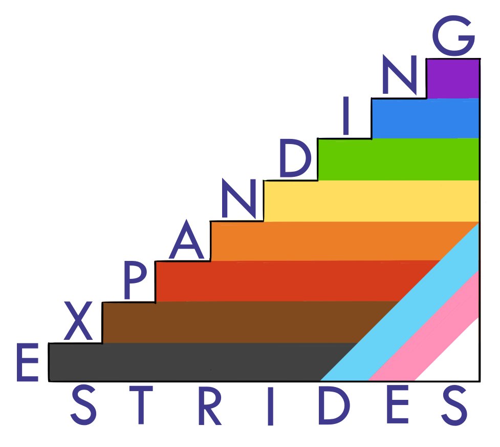
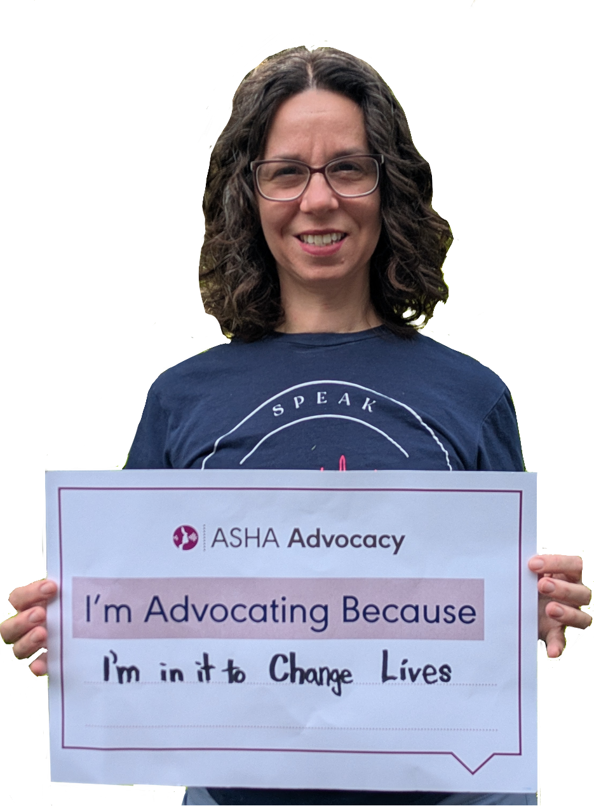
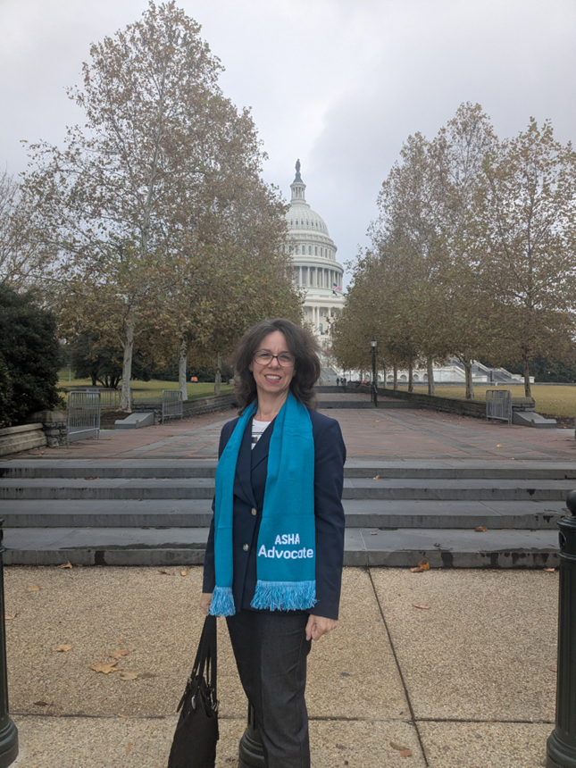
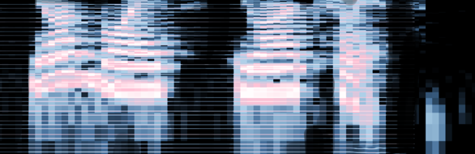

EXPANDING S T R I D E S

A gender‐expansive voice initiative of LANGUAGE S T R I D E S llc

AFFIRM!
Expanding Strides Voice Discovery
Your voice is your personal expression of your gender identity.
In this 3-week course, you will explore the possibilities of your voice:
August 2026 cohort enrolling now:
Participants must have an interview with the instructor prior to beginning the course.
The Expanding Strides Voice Discovery is intended to make it affordable to find the personal vocal expression that aligns with your gender identity and your goals. Many participants will accomplish their goals without ever needing voice therapy. Those who opt to engage in gender‐expansive voice therapy after this course will have a head start in their therapeutic journey.
Meet Andrea

Andrea Pollack founded LANGUAGE S T R I D E S in 2020 to bring excellence to the care of children with language‐based learning disabilities. In June 2026 she debuted EXPANDING S T R I D E S to make it affordable for gender‐divergent folks to find their personal vocal expressions.
A certified member of the American Speech‐Language Hearing Association for over 25 years, Andrea is an ASHA Mentor, an ASHA Advocate, and has earned the ASHA Award for Continuing Education many times over.
Outside of her work in communication disorders, she is an activist & organizer. In her signature workshop, Hear Me Out, she helps people develop communication skills for talking with people across differences. Ultimately, the core of this work is the same as her work in Speech-Language Pathology: Everyone deserves to have dignity.

Contact
To learn more about Language Strides LLC services, please give us a call.
(571) 572-2818
Or send an email to inquiry@language-strides.com
Your voice your choice.
